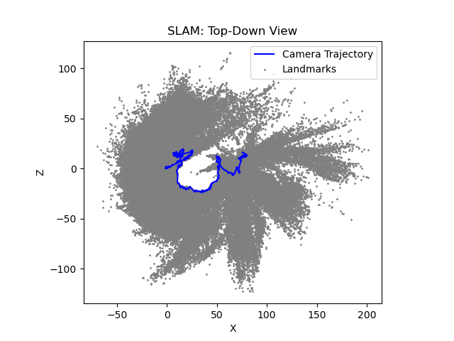
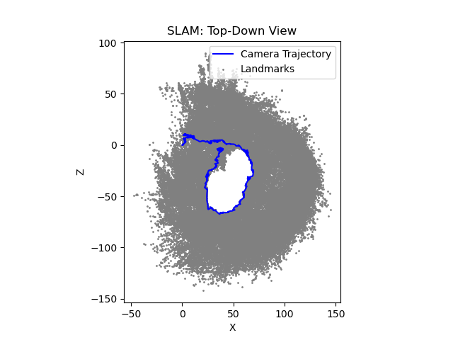
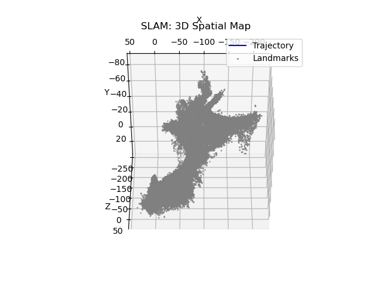
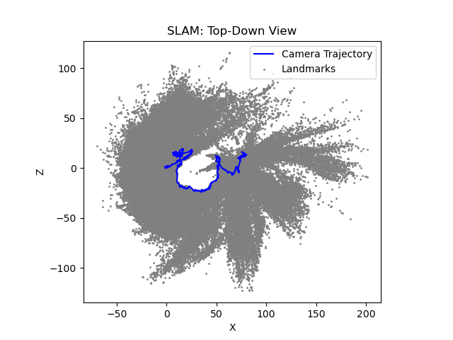
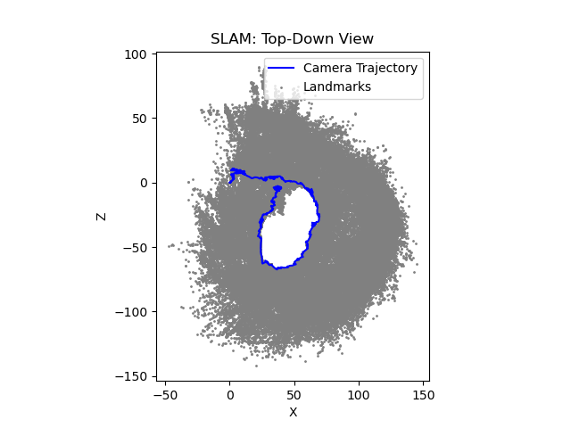
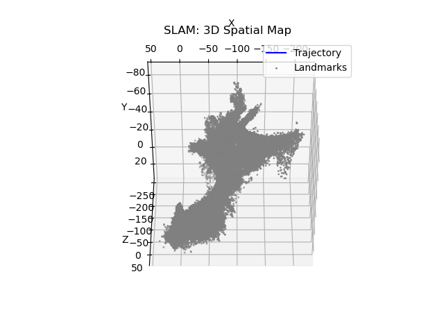

Project Overview
Goal: Build a robot car capable of autonomously navigating to a target location, using visual SLAM (ORB-SLAM3) for mapping and RRT for collision-free path planning. Upon arrival, the robot verifies its position via camera-based AprilTag detection. A fallback simulation mode replicates the same pipeline in software if hardware is unavailable.
Approach:
- Camera based ORB-SLAM to generate a 2D occupancy grid.
- Sampling-based RRT planner to compute a path from start to goal.
Success Criteria: The robot (physical or simulated) successfully reaches the specified goal and confirms via camera detection of a fiducial. 90%+ success rate across multiple trials.
Gallery
 





Place additional images (e.g., robot hardware, projected SLAM map, RRT planning visualization) in the images/ directory. Rename accordingly.
Source Code & Repository
All project code, build scripts, and documentation are available on GitHub:
Team & Contact
- Imaan Soltanalpour: <imaansoltan@gmail.com>
- Jeffery Le: < jeffreyvole@ucla.edu>
For questions about SLAM integration, planning, or hardware setup, feel free to reach out via email.
Demo and Instructions Videos and Video Pre-recording for SLAM test if you choose to not run it live
Watch our instructions in these videos here:
Instructions on Google Drive
Watch our demo this video here:
Demo on Google Drive
Download this video for running SLAM on your own if you want to use a recording:
SLAM recording
Project Report
The final project report (detailed system design, evaluation, discussion) will be placed here as project_report.pdf. For now, this is a placeholder.